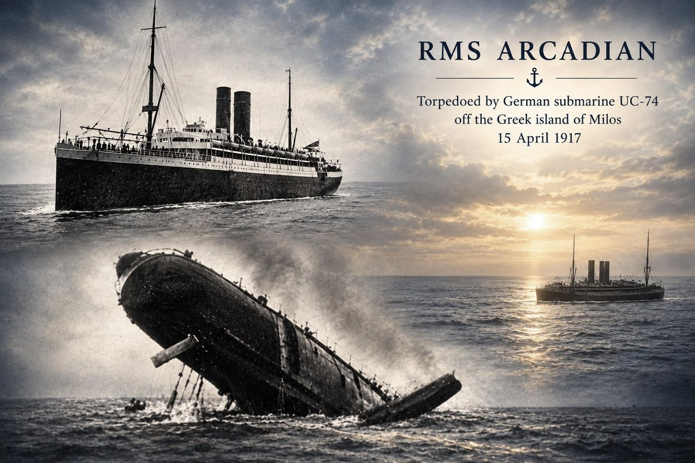

John Godfrey Bradley Smith

John Geoffrey Bradley Smith was a Harrow-educated medical student who qualified as a doctor, married shortly before the war and served as a Lieutenant in the Royal Army Medical Corps. In April 1917, aged 29, he was drowned when the HMT Arcadian was torpedoed and sunk in the Aegean Sea, leaving no known grave.
Civilian Life - John Geoffrey Bradley Smith was the younger son of John Bradley Smith and Harriet Caroline Smith. His father was a tailor and outfitter, and the family lived in Harrow before later moving to New Barnet. John was educated at University College School and went on to study medicine at St Bartholomew’s Medical College, entering in October 1910.
His medical studies led to qualifications as M.R.C.S. and L.R.C.P. He married Olive Sophia Taylor in late 1916, and by the time of his death she was living at Westhourne, Hendford Hill, Yeovil, Somerset. Probate records later described him as John Godfrey Bradley-Smith and recorded his widow, Olive Sophia Bradley-Smith, as his administrator.
Military Life - During the First World War, Smith served as a Lieutenant in the Royal Army Medical Corps. His medical training was followed by military service with the RAMC, and in April 1917 he was travelling aboard the troopship His Majesty's Transport (HMT) Arcadian in the Aegean Sea.
On 15 April 1917, while en route from Thessaloniki (Salonika) to Alexandria, Egypt, carrying 1,335 troops and crew, the Arcadian was struck on its starboard side by a single torpedo, despite being escorted by a destroyer from the Japanese Navy (allies in WW1) . The attack was carried out without warning by the German submarine SM UC-74 at 5:44 PM. The torpedo struck near the engine room, triggering a massive explosion. The ship went down in a catastrophic six minutes, which made an orderly evacuation nearly impossible. Of the 1,335 people on board, 279 perished—mostly cooks, stokers, and engineering crew working below deck. Fortunately, 1,056 survived, partly because the ship had completed a boat drill shortly before the attack. Among the notable victims was Sir Marc Armand Ruffer, a pioneer in modern paleopathology.

Smith was drowned in the sinking. He was initially reported missing and believed drowned before his death was officially confirmed. As his body was not recovered and he had no known grave, he is commemorated on the Mikra Memorial in Greece. Smith was 29 years old. His death was subsequently reported in the Croydon Times, which described him as a qualified doctor and Lieutenant in the RAMC, and recorded his family connections with Croydon and his wife in Yeovil.
By a strange coincidence, one of the survivors of the sinking was Thomas Threlfall who survived the Titanic sinking exactly five years prior. During WWI he continued to serve in the Merchant service and was aboard SS Arcadian when it was transporting wounded from Salonika in Greece to Alexandria in Egypt. On 15 April 1917, five years to the day of the Titanic disaster, Arcadian was torpedoed by a German U-boat and sank in just over five minutes; Threlfall again escaped with his life and later stated: "It was the same day of the week, and the same date of the month that the Titanic went down ... and I have come safely out of both affairs..." Challenged to what was the worse of the two experiences he stated: "Well, the Titanic stopped afloat for a couple of hours and we had time to turn around, but of course you could not live in the water that night. This time we had calm sea and warm weather, and you had a chance, but with the Titanic you died in the water almost as soon as you got in."